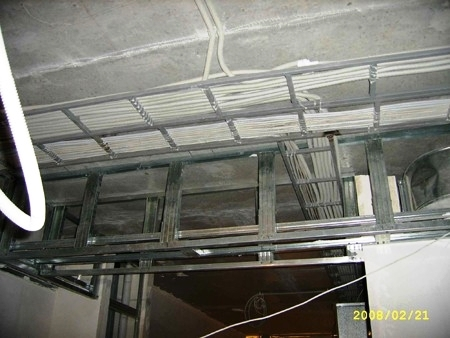
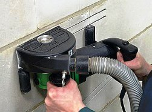

Качественный электромонтаж в Санкт-Петербурге и Ленинградской обл.
Тел. 8 904 642 08 57 Николай.

Разводка электрики по квартире.
Разводка электрики по квартире – это дело рук мастера!
Проводка в современных квартирах играет большую роль, так как она является мощной коммуникацией, без которой не будет работать ни один бытовой прибор. Что бы проводка вам не мешала, и вы чувствовали себя комфортно в собственной квартире, нужно хорошо продумать план разводки электрики. Частный мастер в СПБ сделает это за вас, сэкономит время и труд. За моими плечами большой опыт работ, только хорошие отзывы от клиентов, честность и добросовестность.
Сколько стоит сделать разводку электрики по квартире.
|
Вариант квартиры. |
Цена разводки в руб. |
1- Комнатная квартира. |
От 25 000 |
2- Комнатная квартира. |
32 000 |
3- Комнатная квартира. |
40 000 |
4- Комнатная квартира. |
От 48 000 |
- Надёжную и грамотную разводку электрики в частных домах, квартирах, дачах, офисах и коттеджах.
- Полный спектр услуг в сфере электромонтажа.
- Качественный монтаж проводки двумя способами: открытым и закрытым. По желанию комбинированным.
- Консультации, подбор электроинфраструктуры.
- Доступная цена, качественная работа.

Что бы правильно сделать разводку электрики по квартире нужно быть не только профессионалом своего дела, а иметь соответствующие современные инструменты. Только мастер с золотыми руками сделает всё быстро и безопасно, экономно (для вас) и строк. Специалист сделает расчёт напряжения, учитывая все бытовые электроприборы, и спроектирует план разводки электрики по квартире.
Разводка электрики по квартире закрытым способом.
Скрытая проводка – это самый распространённый вид электрической проводки в квартире. Нужно заметить, что такой способ самый безопасный для жизни человека и надёжный. Но и у него есть недостаток – это его скрытость. Если нужно подключить новый токоприёмник, то обязательно придётся вскрывать стены. А это не маловажно, так как ремонт стоит не малых денег. Прежде чем приступить к монтажу, мастер составляет план и рисует схему расположения всех выключателей, розеток. По нанесённым разметкам на стенах делаются штробы. Именно туда укладывают провода. После чего устанавливаются монтажные короба и электрощит. Далее монтируются все розетки и выключатели, и подключаются светильники. Провода подсоединяются к автоматам (согласно подуманной схеме разводки) и проводку закрывают штукатуркой.
Правила при монтаже скрытой разводки.
- Не допускается пересечение проводов. Если же есть такая необходимость, то в местах их пересечения нужно поставить (обязательно!) дополнительную изоляцию.
- Если стена или её основание из дерева, то под проводку нужно положить асбест толщиной примерно 3 мм. Всё это во избежание пожара.
- Для вывода данной проводки на поверхность нужно пользоваться изоляционной трубкой.
Более современный вид скрытой проводки – это монтаж проводов в полу. Перед заливкой в полу протягиваются пластиковые трубы, внутрь которых вкладываются провода.
Разводка электрики открытым способом.
 Разводка электрики открытым способом выполняется реже, нежели закрытым. Это более экономный вариант и монтаж такой проводки делается в нежилых домах или помещениях. Разводка открытым способом видна невооружённым глазом и портит интерьер. Это значит, что такой вид разводки будет проводиться не внутри стен, а снаружи.
Разводка электрики открытым способом выполняется реже, нежели закрытым. Это более экономный вариант и монтаж такой проводки делается в нежилых домах или помещениях. Разводка открытым способом видна невооружённым глазом и портит интерьер. Это значит, что такой вид разводки будет проводиться не внутри стен, а снаружи.
Для начала нужно составить схему электромонтажа. Далее нанести на стены разметку и закрепить на ней кабель-каналы. Можно для их закрепления использовать разные материалы (всё зависит от того, из какого материала стена): жидкие гвозди, дюбель-бабочки, а также дюбель-гвозди. Последний этап: кабель прокладываем точно по схеме. В короб укладывают кабель и закрывают крышкой.
Проводка под гипсокартонном.
Разводка электрики по квартире должна быть не только практичной, а и безопасной. Проводка под гипсокартонном – это ещё один вид закрытой проводки, которая пользуется большой популярностью в современной стройке. Провода находятся под гипсокартонном и помещают их в специальный гофрированный защитный шланг.
Комбинированная проводка.
Такой вид электропроводки очень часто встречается в жилых помещениях и офисах. Разводка электрики по квартире комбинированным способом удобна и комфортна, не портит общий вид и интерьер. Выполняется она в кабель каналах. Комбинированная проводка благодаря таким каналам одновременно и закрытая, и открытая. Удобна она тем, что становится легкодоступной и (конечно!) экономной! Кабель каналы могут быть самой разнообразной ширины и толщины (какая вам подходит). Для большего комфорта и скрытия видных проводов в кабель каналы можно помещать и телефонные провода и ТВ-провода. В современном варианте каналы могут быть оборудованы в плинтусах.
Основные принципы и правила:
- Нельзя устанавливать выключатели в зоне закрытия дверей.
- Провода не должны соприкасаться с металлическим каркасом стен.
- На полметра нужно отступать от трубных коммуникаций.
- Не должно быть в ванной комнате розеток (кроме бритвенной, которая подключена через трансформатор).
- Если в квартире электрическая плита, то главный автомат должен быть не меньше 63А.
- Провода к выключателям подводятся сверху, а к розеткам – снизу.
- При составлении план-схемы проводки необходимо следить за тем, чтобы расстояние от кабеля к полу или потолка не было меньше 150мм., а до дверных косяков, углов и оконных рам – 100мм.
- Все, без исключения, выключатели и розетки должны находиться на одной высоте. Розетки необходимо устанавливать на высоте 250-300мм., а выключатели – 800-900мм. (слева от входной двери). Но бывают исключения на кухне – размеры можно немного изменить.
- Всегда провода прокладываются только по вертикали и горизонтали. Угол должен быть прямой. В дальнейшем это позволит избежать пробоев кабеля, если вы задумаете ремонт.
- Несколько примеров: почему не стоит делать разводку электрики по квартире самостоятельно.
Разводка электрики по квартире – это очень ответственное и небезопасное задание, с которым лучше всего справится мастер. Этот процесс очень трудоёмкий и многоступенчатый, требуемый к себе ответственности. Разводка электрики – это процесс на первый взгляд не сложный, но он имеет много разный нюансов. Мастер должен иметь знания не только в области электросети, а и в области физики. Также специалист должен знать правила безопасности, знать, как правильно соединять провода. Для правильной проводки мастер должен иметь образование электрика или же «электричество» - это его хобби. В первом и втором случаи он должен быть профессионалом своего дела. При неправильном подключений проводов может случиться замыкание или пожар. Поручив разводку электрики по квартире мастеру, вы можете сэкономить на материале (индикатор скрытой проводки, тестер, пробник и много других).
Хороший мастер – ваша безопасность и уют в квартире.
Разводка электрики по квартире – это одна из самых востребованных услуг нашего времени.
Профессиональный, частный электрик в СПБ:
- Грамотно выполню все расчёты.
- Составлю схему разводки.
- Подберу качественные и соответствующие материалы.
- Выполню работу качественно и самые короткие строки.
- Соблюдаю все правила безопасности.
- Гарантирую в итоге отличную работу.
- Цена на мои услуги – доступная всем потребителям.
- Имею большой опыт и необходимое образование.
- Имеются в наличии самые новые инструменты для работы.
- Доброжелательный, ответственный, знающий своё дело мастер.
 Поменять проводку в квартире.
Поменять проводку в квартире. Сколько будут стоить материалы.
Электрика в загородном доме стоимость работ.

Замена электропроводки в панельном доме.
Расценки на электропроводку квартир.
Замена проводки в хрущевке.
Электромонтаж в частном доме.
Электрика в загородном доме.
Сколько стоит замена электропроводки в двухкомнатной квартире?.
Электрик в новостройку однокомнатная квартира недорого.

Сколько стоит поменять электропроводку в 3-х комнатной квартире.